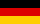

Манчестер Юнайтед
Про клуб
«Манче́стер Юна́йтед» (англ. Manchester United Football Club) — англійський футбольний клуб з осідком в Олд-Траффорд, районі метрополійного Манчестера. Заснований під назвою «Ньютон-Гіт» у 1878 році, клуб змінив свою назву на «Манчестер Юнайтед» 1902 року.
«Манчестер Юнайтед» — один із найуспішніших англійських клубів за кількістю трофеїв за всю історію, а за останні 20 років — найуспішніший клуб в англії. Команда виграла 38 значних кубків з жовтня 1986 року, коли команду очолив Сер алекс Фергюсон.
1968 року «Манчестер Юнайтед» став першим англійським клубом, який виграв Кубок Європейських Чемпіонів, здобувши в фіналі перемогу над португальською «Бенфікою» з рахунком 4:1.
1999 року клуб вдруге виграв Лігу чемпіонів, здолавши в фіналі мюнхенську «Баварію» з рахунком 2:1. 2008 року «Юнайтед» втретє здобув головний європейський клубний трофей, обігравши у фіналі лондонський «Челсі».
У сезоні 2010—2011 «Юнайтед» виграв чемпіонат англії в рекордний 19-й раз, випередивши при цьому «Ліверпуль», а у сезоні 2012—2013, 20-й раз. Крім того, клуб є другим (після арсеналу) за кількістю здобутих Кубків англії (12 перемог).
у травні 2015 року «Forbes» поставив «Манчестер Юнайтед» на третє місце в рейтингу найдорожчих футбольних клубів світу, оцінивши його у понад 3,1 мільярда доларів.
2000 року «Манчестер Юнайтед» посів друге місце у Списку найкращих футбольних клубів 20 століття за версією ФІФА.
Історія
Ранні роки (1878–1945)
«Манчестер Юнайтед», був створений в 1878 році під назвою «Ньютон Хіт Ланкаширські і Йоркширські залізниці». У 1892 році його прийняли до складу Футбольної ліги Англії (через 4 роки після її створення). На початку 20-го століття фінансові справи клубу йшли не найкращим чином і до 1902 року «Ньютон Хіт» був на межі банкрутства. В ролі рятівника виступив великий місцевий підприємець Джон Девіс, який заплатив борги клубу і змінив його назву на «Манчестер Юнайтед». Не можна не відзначити й ім'я першого, по суті, тренера і директора «МЮ» в одній особі — ним став Ернест Мангналл. Саме при ньому «Юнайтед» вийшов в Перший дивізіон, і саме його старання призвели до того, що в кінці 1906 року склад клубу поповнив один з найсильніших футболістів чемпіонату — валлієць Біллі Мередіт, гравець, між іншим, «Манчестер Сіті». Невдовзі прийшли і перші титули — чемпіонство і Суперкубок в 1908 році і Кубок Англії роком пізніше. У наступному році команда переїхала з «Бенк Стріт» на «Олд Траффорд». У 1911 році «МЮ» знову став першим у чемпіонаті Англії. Той сезон запам'ятався ще й тим, що в матчі за Суперкубок Англії «МЮ» здолав «Свіндон» з рахунком 8:4, а найкращий бомбардир манкуніанців Хералд Хелс забив 6 м'ячів.
Період, що передував Першій Світовій війні, нічим хорошим для «МЮ» не запам'ятався — Мангналл пішов у «Манчестер Сіті», результати матчів не вражали, а сама команда перебувала в нижній частині турнірної таблиці. На час війни Футбольна ліга припинила своє існування, а до моменту відновлення чемпіонату в сезоні 1919-20 у складі «Юнайтед» не було вже майже ні одного чемпіона 1911 року. Біллі Мередіт ще значився в клубі, але кар'єра його підходила до завершення 1920-30-ті роки — одна з найсумніших сторінок в історії «МЮ». Курсування між Першим і Другим дивізіонами, падіння відвідуваності, зменшення фінансування (ангел-охоронець клубу Джон Девіс помер у 1927 році) — ось основні тенденції міжвоєнної епохи в історії «МЮ». Дна манкуніанці досягли в сезоні 1933-34, коли лише в останньому турі, обігравши «Міллуолл», ледь уникли вильоту в Третій дивізіон. У ті ж самі дні закляті вороги з «Сіті» узяли Кубок Англії, а на полі у складі «міщан» був шотландець на ім'я Метт Басбі. Здійснивши ще кілька вояжів між Першим і Другим дивізіонами, «МЮ» зустрів Другу Світову війну в когорті найсильніших. За час війни (чемпіонат було призупинено) «Юнайтед» фактично втратив стадіон, зруйнований під час бомбардувань, однак отримав нового тренера — Метта Басбі.
Роки з Басбі (1945–1969)
До Другої світової війни Метт Басбі, що народився в містечку Орбістон графства Ланкашир, грав в «Манчестер Сіті» і в «Ліверпулі», провів кілька матчів за збірну Шотландії на місці крайнього півзахисника. Ще будучи гравцем, він виявив схильність до тренерської роботи, і відразу після війни Басбі запропонували місце помічника тренера в «Ліверпулі». Проте 36 річний Метт вважав за краще очолити який зазнав поразки клуб «Манчестер Юнайтед» в якості головного тренера. Це трапилося в лютому 1945 року. У попередні десятиліття цей клуб не хапав зірок з неба. Чемпіоном Англії був лише двічі, і останній раз в 1911 році. Один єдиний раз виграв Кубок Англії — в 1909 році. Війна принесла «Манчестеру» величезної шкоди: стадіон «Олд Траффорд» був майже повністю зруйнований бомбардуванням, футболістам доводилося грати на чужому стадіоні «Мейн Роуд». Клубна каса була порожня, зате на клубі висів борг в п'ятнадцять тисяч фунтів стерлінгів — на ті часи дуже велика сума. Засукавши рукава, Метт Басбі взявся за роботу.
Сер Олександр Метт Басбі головний тренер клубу «Манчестер Юнайтед» з 1945 року. Мабуть, найважливішим якістю цієї людини було вміння розбиратися в людях і згуртовувати навколо себе тих, на кого він повністю покладався. Першою знахідкою Басбі став валлієць Джим Мерфі, колишній футболіст, що став помічником головного тренера «Манчестера» і його правою рукою. Разом з тим Басбі вмів вимагати і домагатися беззаперечного виконання своїх розпоряджень. Зовні він міг здатися жорстким, навіть грубуватим людиною, однак разом з тим завжди був для своїх футболістів — тих, у кому бачив однодумців і людей, відданих клубу, — турботливим опікуном.
У «Манчестері» в ту пору були непогані гравці — захисники Джон Кері, Джон Астон, Аленбі Чілтон, форварди Стен Пірсон, Чарлз Міттон, Джек Роулі. Однак клуб явно мав потребу в посиленні і відпрацювання командних дій. Басбі вимагав від футболістів суворої і самовідданої гри на своїх місцях, зіграності ліній захисту, півзахисту та нападу і взаємної підстраховки. Ніяких особливих тактичних новинок він не винаходив, команда грала за класичною схемою «дубль ве», але Басбі вмів максимально використовувати можливості кожного футболіста і експериментував, пробуючи його на різних позиціях.
Однак найбільше Басбі піклувався про посилення лінії атаки, добиваючись максимально швидкого перекладу м'яча в чужу штрафну площадку. Важливе значення він надавав і тому, щоб команда показувала яскравий, красивий футбол, захопливий глядачів. Про цей бік великої Ігри одного разу він висловився так: "Коли грають першокласні команди — футбол чудове видовище. Я люблю його драму, відшліфоване майстерність гри, її ретельно налагоджений ритм з додаванням аромату контрастують стилів. Його великі ігри, для мене, у всякому разі, ні з чим не порівняти у світі спорту. Я відчуваю відчуття роману, подиву і таємниці, краси та поезії ".
Копітка робота Метта Басбі з відпрацювання командою гостроатакуючий гри досить швидко почала приносити плоди. Вже в 1947 році «Манчестер Юнайтед» став віце чемпіоном, пропустивши вперед «Ліверпуль». У наступні два сезони він знову опинявся другим, а в 1948 році завоював Кубок Англії, вигравши у фіналі у «Блекпула» — 4:2. Успіхи дозволили відновити стадіон «Олд Траффорд», розрахуватися з боргами і навіть отримати солідний прибуток. Але Метт Басбі заглядав далеко в майбутнє, для чого реорганізував клубну молодіжну футбольну школу і налагодив масштабну селекційну роботу. Скаути «Манчестера» роз'їжджали по всій Англії в пошуках юних футбольних талантів. Результати виявилися блискучими — в 1952 році «Манчестер Юнайтед» став чемпіоном, аксередіне 50 хгодов Басбіудалось створити по справжньому великий клуб, зібравши чудовий ансамбль дивовижно зіграних молодих футболістів.
Серед них були Бобі Чарльтон, Едді Колман, Девід Пегг, Томмі Тейлор і юний, що подає особливі надії форвард Дункан Едварда. Незабаром молоду команду «Манчестер Юнайтед» вже називали не інакше, як «хлопчики Басбі». Ця молода команда з найсильнішою лінією атаки азартно, зухвало і весело увірвалася в еліту англійського футболу, і, здавалося, ніякої суперник їй не страшний. У 1956 і 1957 роках «Манчестер» двічі поспіль був чемпіоном Англії. У 1957 році міг виграти і Кубок Англії, проте несподівано програв у фіналі «Астон Віллі» — 1:2.
У 1957 році «Манчестер» настільки ж зухвало увірвався і в розіграш Кубка європейських чемпіонів, дійшовши до півфіналу, де все таки поступився великому мадридському «Реалу», який в ті роки вигравав головний європейський клубний турнір п'ять разів поспіль. Але в 1958 році «Манчестер Юнайтед» знову вийшов у півфінал Кубка чемпіонів, перемігши за сумою двох матчів бєлградську «Црвену Звезду».
6 лютого 1958, коли клуб повертався до Англії з Белграда після гри з «Црвеною Зіркою», сталася трагедія. Літак, на якому летіли футболісти, зробивши зупинку в Мюнхені для дозаправки, після зльоту впав на землю. У катастрофі загинули 28 пасажирів, серед них були 8 «хлопчиків Басбі», в тому числі і подавав величезні надії Дункан Едварді, 3 керівники клубу і 8 журналістів, які супроводжували команду на гру. Одним з журналістів був знаменитий Френк Свіфт, колишній воротар збірної Англії і клубу «Манчестер Сіті».
Решті футболістам судилося вціліти, сам же Метт Басбі був важко поранений, переніс кілька операцій і довго відновлювався. Після трагедії він ще довго боявся літати на літаку, і в перший раз зважився піднятися в повітря, лише добряче навантажившись перед польотом спиртним. За примхою долі в літаку, що зазнав у Мюнхені катастрофу, не було помічника Басбі Джима Мерфі, який одночасно був тренером збірної Уельсу і якраз в ті дні працював з валлійської командою. Мерфі і керував «Манчестером», поки лікувався Басбі. Знекровлена команда змогла, тим не менш, дійти до фіналу Кубка Англії, але програла «Болтону» — 0:2. На основі цих подій було знято фільм Юнайтед.
Кілька років після цього «Манчестер Юнайтед» залишався середнячком. Але Метт Басбі знову копітко, поволі створював нову велику команду яскравих обдарувань. Вже на початку 60 х років в клубі з'явилися такі зірки, як Денис Лоу і Джордж Бест, а поряд з ними блискуче діяв «старожил» клубу Боббі Чарльтон. «Манчестер» відроджувався, знову показуючи ефективну атакуючу гру. У 1963 році клуб виграв Кубок Англії, в 1965 і 1967 роках ставав чемпіоном країни. Вищим ж тренерським досягненням Метта Басбі став виграш Кубка європейських чемпіонів у 1968 році. У фіналі «Манчестер» зустрічався з португальською «Бенфікою», гра видалася дуже впертій, основний час закінчився з рахунком 1:1. Але вже на початку додаткового часу Джордж Бест, обдуривши серією фінтів кількох захисників, забив другий м'яч. Він вніс перелом у гру, після цього англійці забили ще два голи і перемогли з рахунком 4:1. Два м'ячі на свій рахунок записав у тому матчі Боббі Чарльтон. Ця велика перемога була здобута через 10 років після мюнхенської трагедії — як велика данина пам'яті всім загиблим.
1969–1986
У наступному сезоні Метт Басбі оголосив про те, що завершує свою кар'єру тренера, якій віддав 24 роки. Він став генеральним менеджером «Манчестера», а легендарного шотландця змінив Уілф Макгіннес, раніше виступавший у команді в якості гравця та входивший у тренерський штаб Метта Басбі. Однак колишній тренер, як і раніше, залишався у клубі та нерідко в них з новим керманичем команди виникали суперечки. У підсумку Макгіннес не витримав і наприкінці 1970-го року залишив свій пост, на який тимчасово знов заступив сер Метт Басбі.
Тим часом пошуки керманича продовжувалися і через півроку влітку 1971 новим наставником Манчестер Юнайтед було оголошено Френка О'Фаррелла, який запам'ятався лише купівлею майбутньої зірки клубу Мартіна Бучана. Більш ні на що О'Фаррел виявився не здатним. Після ганебної поразки 0:5 від «Крістал Пелес» наприкінці 1972-го року, його також було звільнено.
Наступним тренером Юнайтед було призначено Томмі Догерті. За результатами чемпіонату 1972/73рр., йому вдалося втримати команду у першому дивізіоні. Але вже наступний сезон видався не таким вдалим. «Манчестер Юнайтед» залишило відразу декілька ключових гравців: Боббі Чарльтон завершив кар'єру, Деніс Лоу перейшов до Манчестер Сіті, а Джордж Бест зазнавав серйозних проблем з ігровою формою. Підсумком сезону 1973/74 став виліт «червоних» до другого дивізіону, останнім кроком куди виявився гол колишнього лідера команди Деніса Лоу, забитий їм у футболці Манчестер Сіті.
Животіння у другому дивізіоні тривало недовго і вже у 1975 Юнайтед повернувся до рядів найсильніших клубів Англії. При цьому Стюарт Пірсон встиг ще отримати звання кращого бомбардира, 17 разів вразивши ворота суперників. У 1976 та 1977 Манчестер Юнайтед двічі поспіль доходив до фіналу Кубка Англії. У першому з них команда Догерті зазнала поразки від Саутгемптона, а у другому фортуна посміхнулася «червоним» і, здолавши Ліверпуль, Юнайтед завоював черговий титул. Цей трофей виявився першим та останнім для Томмі Догерті у клубі — через півтора місяці його буде звільнено. Якщо вірити чуткам, причиною цьому сталі стосунки тренера з Мері Браун, дружиною клубного фізіотерапевта Ларі Брауна.
Далі наставником було призначено Дейва Секстона, який раніше тренував Квінз Парк Рейнджерс. Він перебудовував гру манкуніанців, приділяючи більше уваги захисту. Через це значна частка вболівальників Юнайтед відчувала неприязнь до нового тренера, але, забігаючи наперед, скажемо, що Секстон залишатиметься керманичем команди впродовж довгих 4-ох років. Дебютний сезон Секстона виявився, м'яко кажучи, не дуже вдалим для команди — у підсумковій таблиці чемпіонату 1977/78 вона не увійшла навіть у десятку кращих. Наступного року був фінал Кубка Англії, але й тут фортуна відвернулася від Секстона. Поєдинок на Уемблі проти Арсеналу добігав свого кінця, на табло висвічувався рахунок 0:2 на користь «пушкарів», а до фінального свистка залишалося усього 5 хвилин. Раптом Гордон МакКвін скорочує рахунок, а Семмі Макілрой його зрівнює, переводячи гру в овертайм, але то була остання радість для «Червоних Дияволів». У додатковий час Алан Сандерленд забив третій гол Арсенала, що і виявився вирішальним.
Хід наступного сезону також не передвіщував нічого гарного. Виліт з Кубку Англії у січні від Тоттенхем Хотспур та поразка у чемпіонаті з рахунком 0:6 від Іпсвіч Тауну у березні 1980 змусили прихильників Юнайтед занепасти духом. Однак Секстону вдалося налаштувати гравців належним чином і вісім перемог у завершальних десяти матчах англійської першості вивели команду на високе місце у підсумковій турнірній таблиці, а відставання від тріумфатора сезону Ліверпуля склало усього 2 очки.
Схожий фінішний спурт вдався Манчестер Юнайтед і наступного року, коли клуб виграв останні сім матчів чемпіонату. Але цього разу подвиги «червоних» дозволили їм посісти лише восьмий рядок турнірної таблиці, що ніяк не влаштовувало вболівальників та керівництво клубу. Наприкінці квітня 1981-го року Дейву Секстону було вказано на двері, а тренерський піст зайняв Рон Аткінсон.
Аткінсон запросив до Манчестер Юнайтед Еріка Гаррісона та Міка Брауна у якості асистентів, але куди більший резонанс викликало інше придбання новоспеченого наставника. За неймовірну на той час суму півтори мільйона фунтів до лав манкуніанців перебрався Брайан Робсон, знайомий Аткінсона ще за часів Вест Бромвіч Альбіона. Окрім цього, за півмільйона фунтів, у того ж Вест Бромвіча, було придбано Ремі Мозеса. Третім новобранцем Юнайтед став ще один півзахисник Рей Уілкіс. Окрім вище згаданих футболістів, грали у команді Норман Вайтсайд, Єспер Ольсен, Гордон Страчан та Марк Гьюз — усі виконавці найвищого рівня.
Але не знайшлося у тому складі Манчестер Юнайтед гравця рівня виблискувавшого в ті роки у футболці Ліверпуля Йана Раша. Багато у чому завдячуючи феноменальній грі цього футболіста, Ліверпуль міцно встановив власну гегемонію у чемпіонаті Англії, не дозволяючи нікому навіть наблизитися до заповітного титулу. «Червоні Дияволи» були змушені задовольнитись перемогами у Кубку Англії. Так у фіналі 1982/83 їх суперником був непоступливий Брайтон, довівший закономірність свого виходу у вирішальний матч класною грою проти Юнайтед у першому поєдинку. Той матч завершився внічию 2:2, а на останній хвилині овертайму форвард Брайтона Гордон Сміт ледве не вирвав перемогу для своєї команди. Якби не голкіпер «Червоних» Гарі Бейлі, відбивший той удар, ніякого перегравання не було би, а так, було призначено повторний матч, у якому більш майстерний «Манчестер Юнайтед» здобув впевнену перемогу 4:0. Дубль тоді на свій рахунок записав Робсон, а Арнольд Мурен та Норман Вайтсайд забили по одному голу.
За два роки у 1985 єдиний гол Вайтсайда у ворота Евертона принесе команді черговий Кубок Англії, а Ліверпуль так і лишитиметься недосяжним для усіх, та Аткінсона у тому числі. Не змінять цього розкладу навіть 10 перемог Юнайтед на старті чемпіонату 1985/86рр. Цей сезон стане останнім, що Юнайтед завершить під керівництвом Рона Аткінсона. У листопаді 1986 на тренерський місток Манчестер Юнайтед заступить Алекс Фергюсон.
Сер Алекс Фергюсон (1986—2013)
І от у листопаді 1986 року новини футболу вибухнули повідомленнями про те, що головним тренером «Юнайтед» став Алекс Фергюсон, який завоював з шотландським «Абердіном» численні національні титули, Кубок володарів кубків та Суперкубок Європи в 1983 році.
Не можна сказати, що «МЮ», як за помахом чарівної палички, кинувся рвати всіх і вся. Більш того, під час сезону 1989-90 команда опинилася на дні турнірної таблиці, а Фергюсон — на межі відставки. Але керівництво клубу проявило далекоглядність, і «Юнайтед» закінчив сезон перемогою в Кубку Англії, а роком пізніше завоював Кубок володарів кубків, обігравши у фіналі грізну «Барселону».
Знаковою подією для «МЮ» стало придбання в середині сезону 1992-93 років Еріка Кантони з «Лідса». Очолені чудовим французом, манкуніанці, в складі яких були такі майстри як воротар Петер Шмейхель, Стів Брюс, Браян МакКлейр, Гарі Паллістер, Андрій Канчельскіс, нев'янучий Марк Г'юз і зовсім молодий валлієць Райян Гіггз, за підсумками сезону святкували перше чемпіонство за 26 років. Ще через рік «Манчестер Юнайтед» завоював золотий дубль, ставши чемпіоном і володарем Кубка країни.
Хтозна, скільки б років тривала гегемонія манкуніанців, але в 1995 році Ерік Кантона отримав тривалу дискваліфікацію за свій знаменитий удар фаната у стилі кунг-фу, і «МЮ» поступився чемпіонством «Блекберну», а Кубком — «Евертону». Після повернення француза статус-кво було відновлено — знову золотий дубль у сезоні 1995-96 і чемпіонство рік потому. Сезон 1995-96 запам'ятався ще й появою на арені «пташенят Фергі». Доля вирішила з точністю повторити епоху Басбі і подарувала «МЮ» ще одне покоління супер-талановитої молоді в особі вже згаданого Гіггза, а також Бекхема, Скоулза, Батта і братів Невіллів. Саме вони, а також майбутній капітан команди Рой Кін, куплений за рекордні 3,75 млн. фунтів у «Ноттінгема», склали кістяк команди, яка, переживши відхід з футболу Еріка Кантона в 1997 році, спромоглася на подвиг, якого світ ще не знав. Сезон 1998-99 вболівальники «МЮ» не забудуть ніколи — манкуніанці у впертій боротьбі з «Арсеналом» завоювали чемпіонські медалі, а завершили сезон перемогою в Кубку Англії над «Ньюкаслом» і в Лізі чемпіонів над «Баварією», вирвавши у німецького клубу перемогу в доданий час. Впродовж цілого матчу баварці вели в рахунку 1:0, однак на останній хвили манкуніанці зрівняли рахунок, а у доданий час вирвали перемогу. Фергюсон став другим тренером «Юнайтед», нагороджений лицарським званням, а команда закріпила успіх, завоювавши чемпіонство і в наступних двох сезонах.
Зміна поколінь укупі з появою на небосхилі Прем'єр-ліги нових світил призвела до того, що, вигравши ще одне (9-е в історії АПЛ і 15-е за всю свою історію) чемпіонство в сезоні 2002-03, «МЮ» пішов у тінь, скотившись на другі-треті місця. Не йшли справи і в єврокубках — в сезоні 2005-06 «МЮ» і зовсім зганьбився, не зумівши пройти груповий етап Ліги чемпіонів. Невпевненість у майбутньому Фергюсона (сер Алекс не раз натякав, що пора і на відпочинок), а також у майбутньому клубу (купівля «МЮ» американським бізнесменом Малькольмом Глейзером вилилася в багатомільйонні борги, і багато хто сприйняв цю угоду вкрай негативно) явно не допомагала в боротьбі за чемпіонство, і довгі 3 роки «Юнайтед» втішався другорядними ролями. Хоча без позитивних моментів, звичайно, не обійшлося — чого варта, хоча б, гра голландського супер-бомбардира Руда Ван Ністелроя, який забив з 2001 по 2006 рік 150 м'ячів у складі «МЮ». Крім того, клуб завоював Кубок Англії в 2004 році і Кубок Ліги в 2006. У сезоні 2006-07 ситуація внормувалася, і нова команда, складена з ще свіжих ветеранів — Гіггза, Скоулза і Невілла-старшого, а також молодих зірок — Вейна Руні і Кріштіану Роналду, кинулася на штурм чемпіонських вершин. Упевнена гра була також багато в чому обумовлена приходом в команду досвідченого голкіпера Едвіна Ван дер Сара, в особі якого Фергюсон нарешті знайшов заміну Петеру Шмейхелю, а також потужною зв'язкою в центрі оборони в особі Ріо Фердінанда і Неманьї Відіча. Вони нагадували багатьом зв'язку першого чемпіонського складу Фергі: Брюс-Паллістер. На чолі з парою Руні-Роналду, яка забила 46 голів на двох, «МЮ» зумів потіснити «Челсі» з чемпіонського п'єдесталу і дійшов до півфіналу Ліги чемпіонів, чого не траплялося з 2002 року.
Наступний сезон став не набагато гіршим тріумфального 1998-99. Манкуніанці оступилися лише в розіграші національного Кубка, прикро програвши у чвертьфіналі «Портсмуту». В інших же турнірах зупинити «МЮ» було не під силу нікому — «червоні дияволи» на 2 очки обійшли «Челсі» в чемпіонській гонці, і їх же обіграли у фінальному матчі Ліги чемпіонів, який відбувся на московському стадіоні «Лужники». Героєм зустрічі став Ван дер Сар, який відбив у серії післяматчевих пенальті удар Анелька. У грудні 2008 року «Манчестер» став клубним чемпіоном світу, обігравши у фіналі з рахунком 1:0 еквадорський «ЛДУ». Після закінчення сезону 2008-09, що приніс «МЮ» третій поспіль (і 18-й в історії) чемпіонський титул, англійський клуб зробив рекордну трансферну операцію, продавши чинного володаря звання найкращого футболіста світу Кріштіану Роналду в мадридський «Реал» за 96 мільйонів євро. Також команду покинув Карлос Тевес. З метою посилення атакуючої лінії був підписаний еквадорський вінгер Антоніо Валенсія з «Вігана», а також легендарний нападник збірної Англії Майкл Оуен. Колишня зірка «Ліверпуля» отримав статус вільного агента після того, як його останній клуб «Ньюкасл» залишив Прем'єр-лігу, і дістався манкуніанцям безкоштовно. У 2010 році «Юнайтед» виграв Кубок футбольної ліги, обігравши у фіналі «Астон Віллу» з рахунком 2:1 і вперше у своїй історії захистив свій титул в кубковому турнірі. У 2011 році «МЮ» став чемпіоном Англії у 19-ий раз і вийшов у фінал Ліги чемпіонів, де поступився «Барселоні».
«Манчестер Юнайтед» вважається найпопулярнішим футбольним клубом у світі з найвищою відвідуваністю домашніх матчів. Мережа фан-клубів «МЮ» налічує більше 200 офіційно визнаних філій фанів «Манчестер Юнайтед», розташованих в 24 країнах світу. Для підтримки своєї популярності «МЮ» регулярно подорожує по всьому світу в рамках передсезонної підготовки. За неофіційними даними, «Манчестер Юнайтед» має 330 млн. відданих шанувальників по всьому світу. Найбільшими об'єднаннями фанатів клубу є "Незалежна асоціація уболівальників «Манчестер Юнайтед». Західна трибуна стадіону «Олд Траффорд», відома під назвою «Стретфорд Енд», є найвідомішим місцем зосередження ультрас, які підтримують «МЮ» піснями, кричалками, банерами. У 1998 році американський бізнесмен Руперт Мердок намагався придбати «Манчестер Юнайтед», але вболівальники клубу об'єдналися в організацію під назвою Акціонери Юнайтед проти Мердока (зараз ця організація відома під назвою Траст уболівальників «Манчестер Юнайтед») і успішно протистояли його захопленню. 13 травня 2005 американський бізнесмен Малкольм Глейзер отримав контрольний пакет акцій клубу вартістю близько 1,47 млрд. доларів. 16 травня він збільшив свою частку до 75%, необхідних для отримання повного контролю над клубом. На знак протесту проти цієї купівлі незгодні фанати створили власний клуб «Юнайтед оф Манчестер», який заявився в другий дивізіон футбольної північно-західної ліги (10 за рівнем ліга).
Традиційно непримиримими суперниками «Манчестер Юнайтед» завжди були «Ліверпуль», «Манчестер Сіті» і «Лідс Юнайтед», згодом до цього списку приєднався «Арсенал». Більшість уболівальників «МЮ» вважає «Ліверпуль» головним суперником, що пов'язано боротьбою клубів за звання найтитулованішого, а також їх географічною близькістю. Ще одним заятим ворогом «Манчестер Юнайтед» є сусіди із «Манчестер Сіті». Матчі між командами називають дербі Манчестера. Нині домашня форма «Манчестер Юнайтед» складається з червоних футболок з чорними шевронами на грудях. Ця футболка йде в комплекті з білими шортами з червоними смужками з боків, і чорними гетрами з червоними шевронами на гомілках. Виїзна форма — білого кольору з синіми смугами з боків і навколо шиї. Логотип «Манчестер Юнайтед» кілька разів змінювався, але основна форма залишається незмінною. Дизайн клубної емблеми заснований на гербі міста Манчестер. Диявол на емблемі походить від прізвиська команди, «червоні дияволи», яке з'явилося на початку 1960-х років, коли Метт Басбі запозичив цю назву в регбійного клубу «Солфорд Сіті». До кінця 1960-х років на клубних шарфах почав з'являтися диявол, а офіційно на емблемі клубу він з'явився в 1970 році, утримуючи тризуб у руках. У 1998 році логотип клубу знову поміняв дизайн: цього разу з нього зникли слова футбольного клубу.
Клубні кольори, форма, емблема
Нині домашня форма «Манчестер Юнайтед» складається з червоних футболок із чорними смугами навколо шиї. Ця футболка йде в комплекті з білими шортами з чорними смужками з боків, і чорними гетрами з червоними шевронами на гомілках. Виїзна форма — футболок білого кольору з червоними смугами навколо шиї, чорними шортами з червоними і білими смужками з боків, і білими гетрами з чорними і червоними шевронами на гомілках . Логотип «Манчестер Юнайтед» кілька разів змінювався, але основна форма залишається незмінною.
У ранніх 60-х Салфордський регбійний клуб подорожував по Франції і отримав прізвисько «Червоні Дияволи». Басбі сподобалося це словосполучення, яке звучало значно вагоміше ніж «Малюки Басбі». Він зробив публічну заяву, що відтепер клуб матиме прізвисько «Червоні Дияволи» і незабаром емблема з дияволом стала з'являтися в матчевих програмках і на шарфах. У 1970 році емблема клубу була змінена, тепер вже з маленьким і нахабним дияволом з тризубцем у руках. Емблема з дияволом вперше з'явилася на футболках в 1973 році. Відтоді вона залишилася практично без змін, хоча слова «футбольний клуб» довелося прибрати через невдоволення найзатятіших уболівальників, і стала однією з найбільш пізнаваних торгових марок у світі.
Гімном клубу є пісня "Glory Glory Man United".
- Umbro (1945 — 1975)
- Admiral (1975 — 1980)
-  Adidas (1980 — 1992)
- Umbro (1992 — 2002)
- Nike (2002 — 2015)
- Adidas (2015 — сьогодні)
Титули та досягнення
-
Чемпіонат Англії:
- Чемпіон (20): 1908, 1911, 1952, 1956, 1957, 1965, 1967, 1993, 1994, 1996, 1997, 1999, 2000, 2001, 2003, 2007, 2008, 2009, 2011, 2013
- Віцечемпіон (15): 1947, 1948, 1949, 1951, 1959, 1964, 1968, 1980, 1988, 1992, 1995, 1998, 2006, 2010, 2012, 2021
-
Кубок Англії:
- Володар (12): 1909, 1948, 1963, 1977, 1983, 1985, 1990, 1994, 1996, 1999, 2004, 2016
- Суперкубок Англії (21): 1908, 1911, 1952, 1956, 1957, 1965, 1967, 1977, 1983, 1990, 1993, 1994, 1996, 1997, 2003, 2007, 2008, 2010, 2011, 2013, 2016
- Кубок ліги (5): 1992, 2006, 2009, 2010, 2017
- Ліга чемпіонів УЄФА (3): 1968, 1999, 2008
- Ліга Європи УЄФА: 2017
- Кубок володарів кубків УЄФА: 1991
- Суперкубок Європи: 1991
- Міжконтинентальний кубок: 1999
- Клубний чемпіон світу: 2008
Рекорди
Командні рекорди
- Найбільша перемога в усіх змаганнях: 10:0 — проти «Андерлехту», Кубок європейських чемпіонів, 26 вересня 1956
- Найбільша перемога в Прем'єр-лізі: 9:0 — проти «Іпсвіч Таун», сезон 1994/95, 4 березня 1995; 9:0 — проти «Саутгемптону», сезон 2020/21, 2 лютого 2021
- Найбільша перемога на виїзді в усіх змаганнях: 1:8 — проти «Ноттінгем Форест», Прем'єр-ліга, 6 лютого 1999
- Найдовша безпрограшна серія у всіх змаганнях: 45 матчів — з 26 грудня 1998 по 3 жовтня 1999
- Найдовша безпрограшна серія в Лізі чемпіонів: 25 матчів — з 19 вересня 2007 по 5 травня 2009
- Найдовша безпрограшна домашня серія в Лізі чемпіонів: 24 матчі — з 9 серпня 2005 по 25 листопада 2009
- Найбільша кількість автоголів у ворота суперника в сезоні в Прем'єр-лізі: 11 — сезон 2009/2010
- Найбільша кількість глядачів у домашньому матчі у всіх змаганнях: 83260 — проти «Арсеналу» на «Мейн-Роуд», Перший дивізіон, 17 січня 1948
- Найбільша кількість глядачів у домашньому матчі в Прем'єр-лізі (на «Олд Траффорд»): 76098 — проти «Блекберн Роверз», 31 березня 2007
Рекорди гравців
- Найбільша кількість голів у сезоні у всіх турнірах: 46 — Деніс Лоу, сезон 1963/64
- Найбільша кількість «хет-триків» у всіх змаганнях: 18 — Деніс Лоу (14 «хет-триків» і 4 «покеру» з 3 листопада 1962 по 17 квітня 1971)
-
Найбільша кількість голів в одному матчі: 6. Стільки забивали
- Гарольд Галс, проти «Свіндон Таун», Суперкубок Англії, 25 вересня 1911
- Джордж Бест, проти «Нортгемптон Таун», Кубок Англії, 7 лютого 1970
- Найдовша гольова серія в чемпіонаті Англії: 10 матчів (15 голів) — Руд ван Ністелрой, з 22 березня по 23 серпня 2003
- Найдовший період без пропущених голів у чемпіонаті Англії: 1311 хвилин — Едвін ван дер Сар, з 2 листопада 2008 по 4 березня 2009
- Найшвидший гол: на 12-й секунді — Браян Робсон, проти «Бернлі», Кубок Футбольної ліги, 26 вересня 1984
- Найшвидші 4 голи: 13 хвилин — Уле Гуннар Сульшер, проти «Ноттінгем Форест», Прем'єр-ліга, 6 лютого 1999
- Найбільша кількість трофеїв (без урахування трофеїв молодіжної команди): 34 — Раян Гіггз